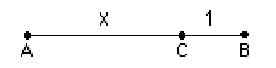

Cutting a segment to get The Golden Mean/
Chapter 7
One of the more common methods of getting the golden mean or golden section is to cut a line segment AB at point C, such that the following proportion works:

If we call the larger segment x, the smaller segment, 1, the whole segment is x + 1. Now write an equation in x using the proportion, then solve it (you might want to see chapter 8 to solve it).
We solved this quadratic equation in various ways by Jamie (using iteration), quadratic formula, and he and Don wrote a program to do this on a TI-84 Plus. Sheri solved it by finding 2 infinite sequences, one with numbers too big, and the other with numbers too small, approaching the same number, The Golden Mean!
See Cristobal Vila's beautiful short movie "Nature by Numbers" at http://www.etereaestudios.com/docs_html/nbyn_htm/intro.htm
See Xah Lee's site on curves- especially the equiangular spiral
See Lori and Don's Nautilus shell applet which shows the growth of the spiral shell from 1 to 3.2 in 360o and the constant angle of 79.5o between the tangent to the curve and the radius.
See also Golden Triangle, Pentagon, Sunflower head and Powers of Phi, on the MAP
Geoffrey graphs the ratios of the Fibonacci numbers and writes a program to get the infinite sequence which has a limit.
Tara writes a story "A Quest For The Sacred Golden Pineapple, Pine Cone and Artichoke"
Comparing the spirals of fibonacci numbers, the Nautilus shell, and The equal-tempered Musical scale
See also Dr. Ron Knott's great webite for much more on the Fibonacci numbers.